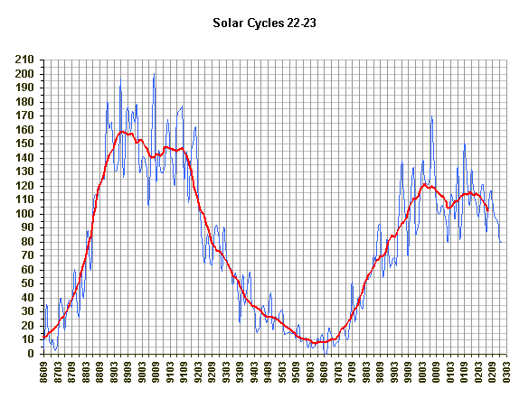

1993年の6m入感状況
[DX Report Jan-Dec.1993]
TIME:JST(UTC+0900)
Report from JA1RJU (PM95sq)
◎サイクル22は下降線をたどり、サンスポット(SSN)も遂に50を切り、DXの入感も激減した1993年のリポート。

07.Jan.1993
ZL4AAA 11:57 50.110 SSB
ZL1ANJ 12:02 50.125 SSB
ZL1TJB 12:12 50.101 SSB QSO
ZL2IK 12:22 50.140 SSB QSO
ZL3NE 12:27 50.110 SSB
ZL1AXB 12:36 50.135 SSB QSO
VK4AFL 12:50 50.145 SSB
VK4MZ 12:54 50.120 SSB QSO
VK7ZIF 13:10 50.110 SSB
VK7GUN 13:13 50.125 SSB QSO
VK3SIX 16:45 50.110 SSB (OP.VK3OT)
10.Jan.1993
VK4APG 12:52 50.110 SSB
VK4IAM 12:59 50.125 SSB QSO
18.Jan.1993
VK4PU 12:13 50.110 SSB
KH6IAA 12:15 50.115 SSB
VK2ZFS 12:40 50.110 SSB
20.Jan.1993
ZL2AQR 13:49 50.110 SSB
ZL3TIC 13:54 50.110 SSB
ZL2TPY 14:21 50.110 SSB
28.Jan.1993
AH1A 09:05 50.110 CW JA1=4 stn QSO
29.Jan.1993
VR6JJ 11:15 50.120 CW into JA2=6 stn QSO
30.Jan.1993
VR6JJ 11:00 50.120 CW open into JA1
31.Jan.1993
◎VR6JJは1/31(10:40JST)現在、10局のJAとQSOに成功した。
05.Feb.1993
VK4IAM 13:06 50.110 SSB
VK3AZY 13:36 50.106 SSB
VK4KJL 13:37 50.122 SSB
VK4DDC 13:43 50.122 SSB
VK4WTN 13:43 50.122 SSB
VK4APG 13:47 50.110 SSB
ZL4AAA 13:51 50.107 CW QSO
VK4XA 13:57 50.099 CW
VK4BRG 14:02- 50.077 CW Beacon
VK4FAR 14:08 50.085 CW QSO
VK4NL 14:12 50.085 CW QSO
VK3AMK 14:21 50.080 CW QSO
VK4ZAZ 14:25 50.140 SSB
VK3DUT 14:51 50.125 SSB
06.Feb.1993
DX1HB/B 20:00- 50.008 CW Beacon
07.Feb.1993
9M2CS 14:49 50.120 CW QSO (OP.SB0KAK)
09.Feb.1993
◎AO-13運用開始(ORBIT #3567)
VR6JJ 09:48 50.120 CW into JA4
10.Feb.1993
DX1HB/B 10:00- 50.008 CW Beacon
13.Feb.1993
VK4KJL 14:18 50.130/110 SSB
VK4PU 14:45 50.135 SSB
15.Feb.1993
VK4GMH 14:28 50.105 SSB
VK4WTN 14:34 50.130 SSB
VK4ZAZ 14:36 50.110 SSB
VK2TAX 14:45 50.110 SSB
17.Feb.1993
VK4GMH 13:20 50.110 SSB
VK5BC 13:21 50.115 SSB
18.Feb.1993
VR6JJ 10:10 50.120 CW weak into JA1.2.4
19.Feb.1993
VK4GMH 12:59 50.110 SSB
VK4PU 13:15 50.105 SSB
VK4XA 13:24 50.098 CW
21.Feb.1993
VS6BG 11:32 50.100 SSB
VS6SIX 11:33- 50.075 CW Beacon
DX1HB/B 11:33- 50.008 CW Beacon
HL9US 11:48 50.114 SSB
24.Feb.1993
VK4HBW 14:23 50.110/150 SSB
27.Feb.1993
VK4AFL 13:03 50.120 SSB
P29JA 21:03 50.125 SSB QSO (QSL via JH7MSB)
28.Feb.1993
VK4KK 18:26 50.110 CW
VK4WTN 18:28 50.110 SSB
VK4PG 18:33 50.110/130 SSB
VK4NE 18:37 50.155 SSB QSO
P29PL 20:00 50.125 SSB
02.Mar.1993
VK4FP 19:17 50.113 SSB
03.Mar.1993
T30JH 09:36 50.110 SSB QSO
VK4KK 10:03 50.110 CW
VK4WTN 10:05 50.109 CW
VK4ALM 10:18 50.127 SSB
T30JH 12:28 50.110 SSB
VK4AFL 12:47 50.110 SSB
05.Mar.1993
VR6JJ 11:20 50.120 CW QSO (6m #128)
VK4ZAZ 11:50 50.120 SSB
VK4WTN 11:45 50.115 SSB
VK4PU 12:17 50.106 SSB
VK4PG 15:18 50.115 SSB
VK4AFL 15:19 50.120 SSB
VK2YLO 15:20 50.110 SSB
07.Mar.1993
T30JH 12:25 50.110 SSB
DX1HB/B 12:47 50.008 CW Beacon
VS6SIX 12:48 50.075 CW Beacon
VK4ABW 12:50 50.110 SSB
VK6YCF 13:38 50.110 SSB
VK4APG 16:10 50.110 SSB
VK4AR 17:04 50.110 SSB
VK4GMH/M 17:25 50.110 SSB
VK4AFL 17:41 50.115 SSB
08.Mar.1993
VK4ZAL 14:27 50.110 SSB
VK3OT 14:39 50.110 CW QSO
VK6ZAR 14:40 50.110 SSB
VK4PU 14:41 50.105 SSB
10.Mar.1993
VK3OT 13:36 50.110 SSB
XU5DX 13:38 50.110 CW QSO (QSL via F6FNU)
XU5DX 14:19 50.110/113 SSB QSO (ex FO0AQ)
FK8DH 15:42 50.110/120 SSB
FK8GA 15:47 50.110 SSB
VK4PG 15:54 50.125 SSB
KH6HH 15:59 50.140 SSB QSO
◎DL7AV来日Meeting(銀座・一平)。
12.Mar.1993
T30JH 10:00 50.110 SSB
14.Mar.1993
AH6LR 10:30 50.110 SSB SC
KH6HH 11:00 50.110 SSB SC
V73SG 14:58 50.110 SSB
T30JH 15:00 50.120 SSB
VK8VF 21:22- 50.056 CW Beacon
15.Mar.1993
T30JH 12:46 50.110 SSB
V73SG 13:02 50.110 SSB
AH6LR 13:40 50.110 SSB
ZL4AAA 15:27 50.110 SSB
DX1HB/B 23:10- 50.008 CW Beacon
24.Mar.1993
AH6LR 12:01 50.110 SSB QSO
FK8GA 12:20 50.110 SSB
25.Mar.1993
VK4IAM 18:02 50.135 SSB
VK4NE 18:04 50.140 SSB QSO
VK4UTT 18:08 50.110 SSB
HL9UH 18:11 50.115 SSB
VK8VF 18:54- 50.056 CW Beacon
26.Mar.1993
VK8VF 00:06- 50.056 CW Beacon
DX1HB/B 00:07- 50.008 CW Beacon
P29CW 00:13 50.110 CW QSO
VK6JQ 18:46 50.110 SSB
27.Mar.1993
VR6JJ 11:00 50.120 CW into JA1.2.3
30.Mar.1993
5R8DP 19:30 50.110 SSB into JA5.6.JR6
◎5R8DPはJA1OEM・豊福さんによるマダガスカルからの運用。QTHは首都のTananariveの南。
チャファジャブナム山(2,638m)の東側が運用地(GL=LH30RT)。
31.Mar.1993
P29JA 19:21 50.120/114 SSB
VK8VF/B 19:22 50.056 CW Beacon
P29PL 19:35 50.110 SSB
01.Apr.1993
VK4AFL 14:33 50.110 SSB
02.Apr.1993
VR6JJ 11:40 50.120 CW into JA1
FK8EB 16:52 50.115 SSB
VK6JQ 21:10 50.115 SSB
VK8VF 21:18- 50.056 CW Beacon
03.Apr.1993
VR6JJ 10:36 50.120 CW into JA1.2
VK6JQ 21:40 50.113 SSB
VK8VF 21:41- 50.056 CW Beacon
VK4FP 22:32 50.110 SSB
DX1HB/B 23:17- 50.008 CW Beacon
04.Apr.1993
XU0UN 17:38 50.110 SSB into JA2-6
P29CW 19:48 50.110 SSB
VK8AH 19:49 50.110 CW
07.Apr.1993
VK4ABW 12:10 50.120 SSB
VK4AFL 13:45 50.110 SSB
XU5DX 14:16 50.110/115 SSB
08.Apr.1993
VK6JQ 19:15 50.120 SSB
11.Apr.1993
V63AO 16:34 50.120 SSB
12.Apr.1993
VK4ZAL 13:22 50.110 SSB
22.Apr.1993
VK4FP 17:56 50.110 CW
23.Apr.1993
VK4DO 18:21 50.110 SSB
G4SMC/9M6 18:24 50.110 CW QSO
24.Apr.1993
VK8RH 23:31 50.110 CW
25.Apr.1993
G4SMC/9M6 17:09 50.110 SSB
VK4TL 18:18 50.110 SSB
27.Apr.1993
VK4FP 17:30 50.110 CW
VK4JH 18:51 50.110 CW
VK4ZJR 18:53 50.110 SSB
VK4ABW 18:54 50.110 CW
VK4TL 18:59 50.110 CW
28.Apr.1993
VK4ABW 17:39 50.110 SSB
VK4FP 18:33 50.110 CW
VK4TL 18:39 50.150 SSB
29.Apr.1993
VK6JJ 16:16 50.110 SSB
ZL2TPY 17:51 50.110/120 SSB
VK4FP 18:13 50.110 SSB
P29CW 18:35 50.110 SSB
P29JA 18:50 50.110 SSB
02.May.1993
VK4EJR/P 17:52 50.110 SSB
VK4FP 18:03 50.110 SSB
G4SMC/9M6 18:57 50.110 SSB QSO
03.May.1993
G4SMC/9M6 17:30 50.105/110 SSB
JI2AMA/JD1 18:07 50.122 SSB QSO (Minami Torishima)
G4SMC/9M6 23:30 50.110 SSB
04.May.1993
DX1HB/B 01:28 50.008 CW Beacon
G4SMC/9M6 16:59 50.110 SSB
05.May.1993
G4SMC/9M6 00:14 50.110 SSB
RZ0CZZ 06:34 50.115 CW QSO (OP & QSL JA1UT)
RZ0CZZ 06:37 50.115 CW QSO
VK8AH 22:49 50.110 CW
06.May.1993
T30JH 19:39 50.110 SSB QSO
09.May.1993
G4SMC/9M6 18:27 50.112 SSB
VK4FP 18:35 50.110 CW
11.May.1993
G4SMC/9M6 20:00 50.120 SSB
14.May.1993
VK4BRG 18:12 50.110 SSB
BV2DP 19:53 50.110 SSB
BV2HS 20:28 50.110 SSB
16.May.1993
HL9UH 12:00 50.110 SSB (ex KG6UH Luis)
HL1OTA 12:18 50.120 SSB QSO
HL9UH 12:36 50.115 SSB QSO
18.May.1993
G4SMC/9M6 19:05 50.110 CW/SSB
20.May.1993
JT1KAA 20:20 50.110 CW
23.May.1993
BV2DQ 12:21 50.110 SSB
28.May.1993
◎マレーシア領スプラトリーから9M0Sが初運用されたが6mは許可されなかった。
01-07.Jun.1993
◎第１回テレコムパーティー開催。
01.Jun.1993
HL4ODI 17:54 50.110 SSB
HL9UH 18:20 50.115 SSB
VS6SIX 18:58 50.075 CW Beacon
03.Jun.1993
VK4FP 19:23 50.110 CW
04.Jun.1993
VS6SIX 23:29 50.075 CW Beacon
05.Jun.1993
HL9UH 10:16 50.110 SSB
07.Jun.1993
JT1KAA 12:53 50.110 CW QSO
20.Jun.1993
BV2DP 09:41 50.110 CW
JH1MAO/JD1 09:27 50.120 SSB
26-27.Jun.1993
◎東北6SGMeeting(山形県天童市)。
26.Jun.1993
JH1MAO/JD1 09:10 50.120 SSB
27.Jun.1993
HL2IKY 17:00 50.106 CW
28.Jun.1993
HL1LKA 11:24 50.084 CW
HL2ODI 12:00 50.110 SSB
29.Jun.1993
JT1KAA 11:30 50.110 CW/SSB
HL2ODI 14:39 50.110 SSB
11.Jul.1993
BV2FL 13:00 50.110 SSB
12-30.Jul.1993
◎特記する6mのDX入感はなし。
10.Aug.1993
VK4EJR 15:37 50.140 SSB
KC6IL 17:04 50.130 CW QSO (Palau Is. OP.JF3PLF)
20-22.Aug.1993
◎1993年ハムフェア(晴海)開催。
◎6m DXCC申請(#153=124/127
22.Aug.1993
VK4JH 16:00 50.110 CW
23-31.Aug.1993
◎特記する6mのDX入感はなし。
01-30.Sep.1993
◎特記する6mのDX入感はなし。
23.Sep.1993
◎メリッシュリーフからVK9MMが運用中。6mは50.120MHzにQRVしているがオープンは無し。
(VK9MM:OP=VK2BEX.VK2BJL.VK4CRR.K5VT.WA4DAN.G3MGV.P29DX.V73C)
01-25.Oct.1993
◎特記する6mのDX入感はなし。
26.Oct.1993
V77H 12:20 50.110 SSB
V73C 12:20 50.110 SSB (-12:44JST F.OUT)
27.Oct.1993
V77H 13:20 50.110 SSB
28.Oct.1993
VK6YU 15:50 50.110 SSB
VK6JJ 16:00 50.110 SSB
VK6RO 16:33 50.100 CW
09.Nov.1993
ZL1MQ 11:54 50.105 SSB QSO
ZL1AXM 11:58 50.115 SSB QSO
ZL2AAA 12:02 50.115 SSB QSO
ZL2KT 12:03 50.115 SSB QSO
VK4PG 12:08 50.115 SSB QSO
VK4AFL 12:14 50.115 SSB QSO
VK4GMH 12:18 50.115 SSB QSO
VK4ZQ 12:33 50.118 SSB QSO
16.Nov.1993
VK4KK 15:06 50.110 SSB
VK4WTN 15:10 50.140 SSB QSO
VK4NE 16:00 50.125 SSB QSO
04.Dec.1993
VK2ZZY 13:43 50.125 SSB
VK2GLS 13:56 50.105 SSB
VK2EDB 13:58 50.105 SSB
VK2ANS 14:00 50.140 SSB
VK3SIX 14:01 50.105 SSB
VK4XA 14:02 50.100 CW
09.Dec.1993
VK4APG 11:56 50.110 SSB
VK4UCY 12:16 50.130 SSB
VK4UCY 12:22 50.130 SSB QSO
VK4KGP 12:26 50.134 SSB QSO
VK2BA 12:38 50.125 SSB
VK2GLS 12:38 50.129 SSB QSO
10-31.Dec.1993
◎特記する6mのDX入感はなし。
|